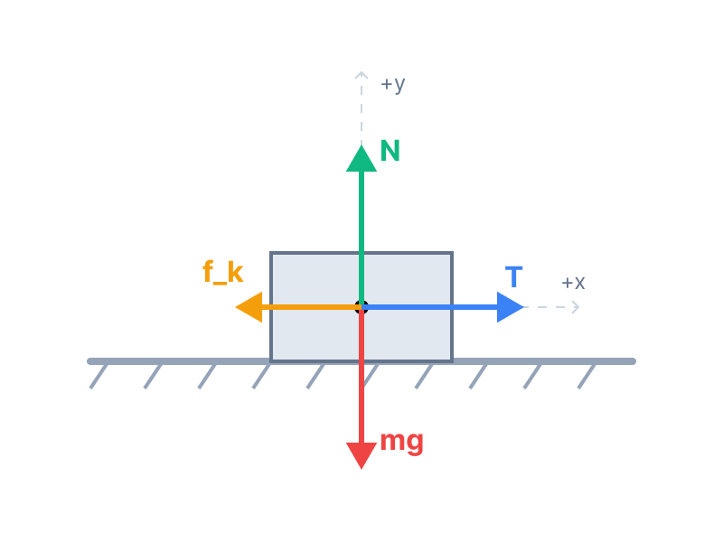
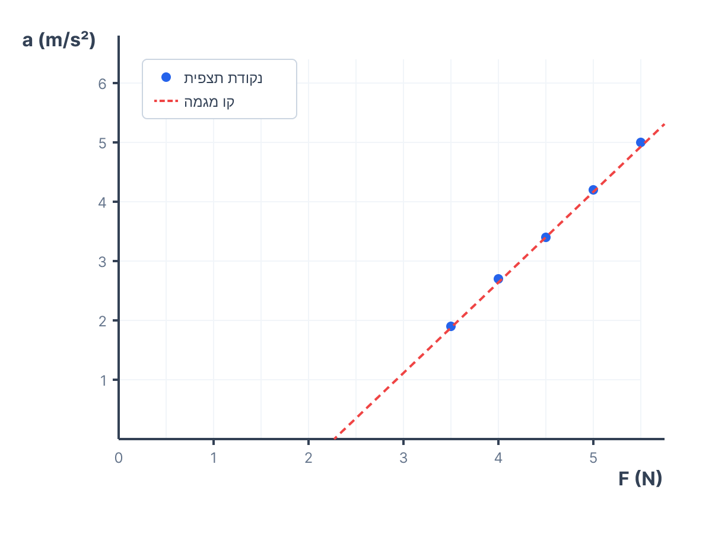

סעיף א': תרשים כוחות
1. מה נתון:
מערכת ובה תיבה בעלת מסה \( m \) מונחת על משטח אופקי מחוספס. התיבה קשורה בחוט העובר דרך גלגלת, ותלמידה מושכת את הקצה השני של החוט כלפי מטה בכוח \( F \). נתון כי מקדם החיכוך הקינטי הוא \( \mu \).
שלב 0 (המרת יחידות): אין נתונים מספריים בסעיף זה, המערכת תתואר באמצעות פרמטרים.
2. מה מחפשים:
לשרטט תרשים כוחות (FBD) הפועלים על התיבה, לרשום את שם כל כוח ולציין איזה גוף מפעיל אותו.
3. נוסחאות בשימוש:
בשלב זה אנו מסתמכים על היכרות עם הכוחות הבסיסיים במכניקה (כבידה, נורמל, מתיחות, חיכוך) ועל החוק השלישי של ניוטון להבנת "מי מפעיל את הכוח".
4. פתרון:
נשרטט את התיבה כנקודה (על פי מודל החלקיק) ונצייר את וקטורי הכוחות היוצאים ממרכזה. מאחר והתלמידה מושכת את החוט בכוח \( F \), ובהנחה שמדובר בחוט אידיאלי, המתיחות לאורך החוט שווה ל-\( F \). נסמן את כוח המתיחות כ-\( T \), כאשר גודלו שווה לכוח \( F \).

רשימת הכוחות והגופים המפעילים אותם:
- \( W = mg \) (כוח הכובד) – מופעל על ידי כדור הארץ (כלפי מטה).
- \( N \) (כוח נורמלי) – מופעל על ידי המשטח האופקי (כלפי מעלה, במאונך למשטח).
- \( T \) (מתיחות) – מופעל על ידי החוט (ימינה, במקביל למשטח). הערה: גודלו שווה ל-\( F \).
- \( f_k \) (כוח חיכוך קינטי) – מופעל על ידי המשטח האופקי (שמאלה, נגד כיוון התנועה).
סעיף ב': פיתוח ביטוי לתאוצה
1. מה נתון:
הכוחות שפועלים על המסה \( m \) כפי שזיהינו בסעיף א'. התיבה מאיצה לאורך ציר ה-x.
אנו מגדירים כיוון חיובי לציר x ימינה (כיוון תנועת התיבה), וציר y חיובי כלפי מעלה. תאוצת הכובד \( g = 10 \, m/s^2 \) תישאר כפרמטר \( g \) כנדרש.
2. מה מחפשים:
ביטוי תאורטי עבור גודל התאוצה של התיבה, \( a \), כפונקציה של הכוח \( F \). כלומר, המשוואה צריכה להיראות בצורה \( a = \dots \) ולהכיל רק את הפרמטרים \( m, \mu, g, F \).
3. נוסחאות בשימוש:
4. פתרון:
נפעיל את החוק השני של ניוטון על כל ציר בנפרד.
בציר ה-y (אנכי):
התיבה אינה מאיצה בכיוון האנכי, לכן שקול הכוחות מתאפס (\( a_y = 0 \)):
חישוב כוח החיכוך הקינטי:
כעת נציב את גודל הכוח הנורמלי בנוסחת החיכוך (נציב \( \mu_k = \mu \) לפי הנתון בשאלה):
בציר ה-x (אופקי):
התיבה מאיצה בכיוון משיכת החוט. הכוח שמושך את התיבה קדימה הוא כוח המתיחות של החוט, נסמנו כ-\( T \). הכוח שמתנגד לתנועה הוא כוח החיכוך הקינטי \( f_k \). על פי החוק השני של ניוטון:
הקשר בין המתיחות \( T \) לכוח המשיכה \( F \):
- התלמידה מושכת את קצה החוט בכוח שגודלו \( F \). על פי החוק השלישי של ניוטון (פעולה ותגובה), החוט מפעיל על התלמידה כוח מתיחות השווה בגודלו ל-\( F \). לכן המתיחות בקצה החוט היא \( F \).
- מכיוון שמדובר בחוט אידיאלי (חסר מסה) העובר דרך גלגלת אידיאלית (חסרת חיכוך ומסה), כוח המתיחות אחיד ושווה לאורכו של כל החוט.
- לכן, מתיחות החוט המושכת את התיבה בקצה השני שווה גם היא ל-\( F \), כלומר: \( T = F \).
כעת, לאחר שהבנו את הקשר, נציב \( F \) במקום \( T \) במשוואה שלנו:
נציב את הביטוי שמצאנו עבור \( f_k \):
נבודד את התאוצה \( a \) על ידי חלוקת שני אגפי המשוואה במסה \( m \):
כאן: המשתנה התלוי שלנו הוא \( a \) (ציר y בגרף), המשתנה הבלתי תלוי הוא \( F \) (ציר x בגרף), שיפוע הגרף יהיה \( \frac{1}{m} \), ונקודת החיתוך עם הציר האנכי תהיה \( -\mu g \). הבנה זו תעזור לנו מאוד בסעיפים הבאים!
סעיף ג': שרטוט גרף פיזור וקו מגמה
1. מה נתון:
טבלת המדידות מתוך השאלה:
| \( F \, (N) \) | 3.5 | 4.0 | 4.5 | 5.0 | 5.5 |
|---|---|---|---|---|---|
| \( a \, (m/s^2) \) | 1.9 | 2.7 | 3.4 | 4.2 | 5.0 |
2. מה מחפשים:
(1) לשרטט גרף פיזור של התאוצה \( a \) כפונקציה של הכוח \( F \).
(2) להוסיף קו מגמה (הישר המתאים ביותר).
3. פתרון ושרטוט:
על פי הכלל במדעים, "y כפונקציה של x" אומר שהתאוצה \( a \) תהיה על ציר ה-y, והכוח \( F \) יהיה על ציר ה-x. נסמן את הנקודות במערכת צירים ולאחר מכן נעביר ישר מגמה שעובר קרוב ככל האפשר לכל הנקודות.

סעיף ד': חישוב מסה ומקדם חיכוך מהגרף
1. מה נתון:
המשוואה התיאורטית מסעיף ב': \( a = \frac{1}{m}F - \mu g \).
נחשב את שיפוע קו המגמה ששרטטנו. הערה חשובה: טעות נפוצה היא לבחור אוטומטית שתי נקודות מהטבלה. עלינו לבחור שתי נקודות שמונחות בדיוק על קו המגמה (אם נסתכל היטב על הגרף ששרטטנו, נראה שהנקודה האחרונה (5.5, 5.0) נמצאת מעט מעל הקו ולא ממש עליו!). נבחר נקודות מהקו עצמו שניתן לקרוא אותן מהגרף בדיוק סביר:
נקודה 1: \( (F_1 = 3.5 \, N, \, a_1 = 1.9 \, m/s^2) \) (נקודה ראשונה שיושבת בול על הקו)
נקודה 2: \( (F_2 = 5.0 \, N, \, a_2 = 4.2 \, m/s^2) \) (נקודה על קו המגמה. שימו לב שאנו קוראים 4.2 ולא ערך ברמת מאיות כמו 4.21, כי זה מה שניתן לקרוא מגרף משורטט)
אנו זוכרים כי תאוצת הכובד היא \( g = 10 \, m/s^2 \).
2. מה מחפשים:
(1) לחשב את מסת התיבה \( m \).
(2) לחשב את מקדם החיכוך הקינטי \( \mu \) בין התיבה למשטח.
3. נוסחאות בשימוש:
4. פתרון - תת סעיף (1) חישוב המסה:
נשווה בין המשוואה התיאורטית למשוואת הישר המתמטית \( y = kx + b \):
נחשב את שיפוע הגרף מהנקודות שעל קו המגמה:
כעת, נשווה את השיפוע התיאורטי לשיפוע שחישבנו ונחלץ את המסה:
4. פתרון - תת סעיף (2) חישוב מקדם החיכוך:
נחזור להשוואה שלנו מול המשוואה התיאורטית. האיבר החופשי (נקודת חיתוך עם ציר y) שווה תיאורטית ל- \( -\mu g \).
דרך נוחה ומדויקת יותר למצוא את \( \mu \) מבלי להסתמך על קריאה ויזואלית של החיתוך, היא להציב את אחת מנקודות קו המגמה ואת המסה שמצאנו לתוך המשוואה המלאה:
נציב את הנקודה \( (F = 3.5, a = 1.9) \), את השיפוע \( 1.533 \), ואת \( g=10 \):
זיהוי מעולה של טעות נפוצה! תלמידים נוטים לבחור אוטומטית את הנקודה הראשונה והאחרונה בטבלה. בבגרות, חובה לחשב שיפוע משתי נקודות שמונחות פיזית על הישר ששרטטתם. כמו שראינו, הנקודה (5.5, 5.0) חורגת מעט מהקו שהעברנו, ולכן עדיף לא להשתמש בה ישירות. כמו כן, זכרו שאנו מוגבלים לדיוק הקריאה שלנו מהגרף (לקרוא 4.2 זה הגיוני, 4.21 זה בלתי אפשרי בשרטוט ידני).
סעיף ה': שינוי הכוח המופעל
1. מה נתון:
התלמידה מחליפה את המערכת ומושכת את החוט בכוח חלש יותר: \( F = 1.5 \, N \).
מהסעיף הקודם אנו יודעים שהמסה היא \( m \approx 0.652 \, kg \) ומקדם החיכוך הקינטי הוא \( \mu \approx 0.347 \).
2. מה מחפשים:
לקבוע מה תהיה תאוצת התיבה במקרה זה, ולהסביר את הקביעה פיזיקלית.
3. נוסחאות בשימוש:
4. פתרון:
כדי שגוף יתחיל לנוע על משטח מחוספס, הכוח המושך צריך להיות גדול מכוח החיכוך הסטטי המקסימלי (\( f_{s,max} = \mu_s N \)). למרות שאין לנו את מקדם החיכוך הסטטי \( \mu_s \), אנו יודעים עובדה חשובה: מקדם חיכוך סטטי תמיד גדול או שווה למקדם חיכוך קינטי (\( \mu_s \ge \mu_k \)).
נחשב קודם כל את כוח החיכוך הקינטי שכבר פעל במערכת כאשר הגוף נע (מתוך נתוני סעיף ד'):
כוח המשיכה החדש של התלמידה הוא \( F = 1.5 \, N \). נשווה אותו לכוח החיכוך הקינטי:
מכיוון שהכוח המופעל (\( 1.5 \, N \)) קטן משמעותית אפילו מכוח החיכוך הקינטי (ששווה 2.26 ניוטון), הוא בוודאי קטן מכוח החיכוך הסטטי המקסימלי הדרוש להתחלת תנועה (שהוא גדול מ-2.26 ניוטון). המשמעות היא שהכוח המושך אינו מספיק כדי "לשבור" את אחיזת החיכוך בין התיבה למשטח.
התיבה תישאר במנוחה, וכוח החיכוך הסטטי שיפעל עליה יתאים את עצמו לכוח המושך ויהיה בדיוק שווה לו (\( f_s = 1.5 \, N \)). לכן שקול הכוחות הוא אפס.
הסבר: הכוח שהתלמידה מפעילה (\( 1.5 \, N \)) קטן מכוח החיכוך הקינטי (שהוא \( \approx 2.26 \, N \)), ולכן בהכרח קטן מכוח החיכוך הסטטי המקסימלי. הגוף לא יתחיל לנוע ויישאר במנוחה.